Un condominio progettato interamente dall'intelligenza artificiale.
Undici alloggi a Parma, rifatti da capo con un telaio a pilastri calcolato a elementi finiti: architettura, strutture, involucro, impianti, arredo e modelli 3D. Ogni numero è calcolato con codice, ogni ipotesi è dichiarata.
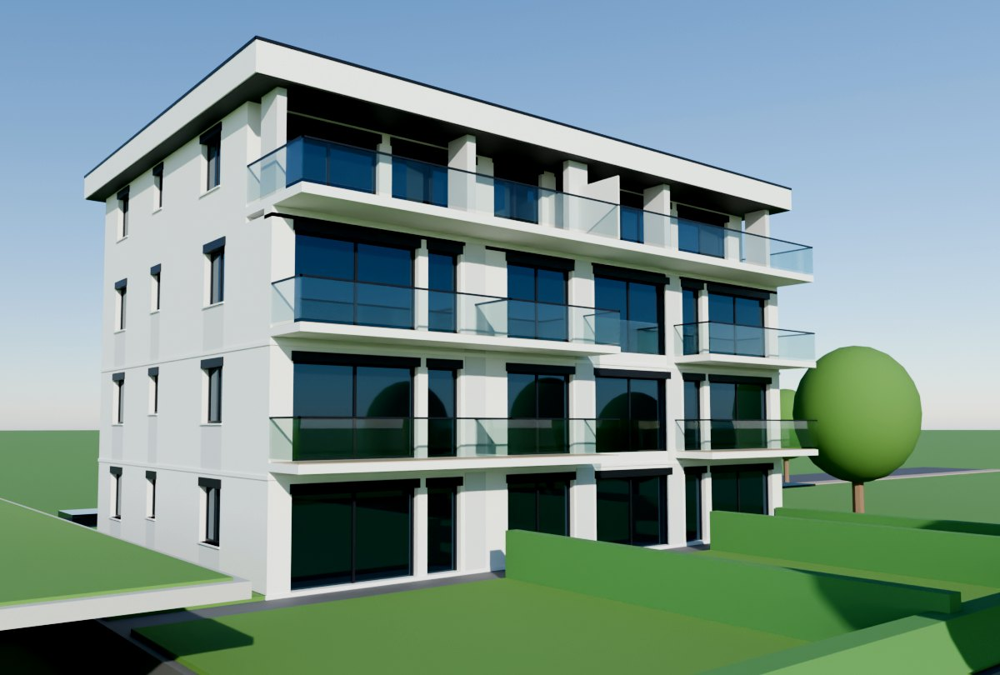
Immagine indicativa · preliminare, da verificare
11alloggi su quattro piani, più l'interrato con 15 box
24pilastri in calcestruzzo armato, tutti dentro i muri
124nodi nel modello a elementi finiti del telaio (OpenSees)
0urti fra arredo, impianti e strutture nel controllo automatico
L'edificio
Quattro piani, un atrio vero, l'attico arretrato.
Un edificio in linea di 20,60 × 13,80 metri in via Primo Savani, a Parma. Al centro del fronte nord un atrio a quota marciapiede con corpo d'ingresso vetrato, la scala con una finestra a ogni ripiano e un vuoto a tutta altezza che porta luce ai pianerottoli. A sud soggiorni e balconi; all'ultimo piano la facciata arretra di un metro e mezzo e lascia un terrazzo con loggiato.
Niente gas: pompe di calore in copertura, pavimento radiante, ventilazione meccanica in ogni alloggio, fotovoltaico sul tetto piano.
Alloggi
116 trilocali · 3 bilocali · 2 attici
Piani
4 + interratointerpiano 3,15 m · locali alti 2,70 m
Struttura
Telaio in c.a.24 pilastri · travi 25×50 e 30×60 · solai in laterocemento
15 box chiusipavimento a −2,20 · rampa coperta al 15%
Piano terra
+1,00 matrio a 0,00 · sei gradini o l'ascensore
Classe energetica
Non calcolataobiettivo del brief: A4
Da sud-ovest: balconi, terrazzo dell'attico, giardini sopra l'autorimessa
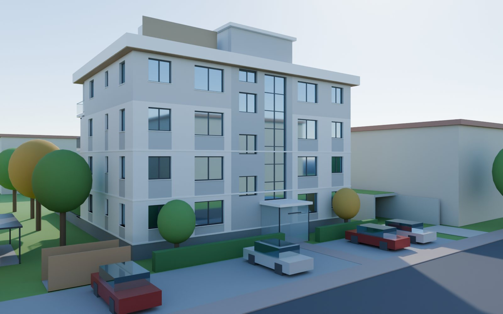
Fronte nord: nucleo della scala, vetrata del vuoto, corpo d'ingresso
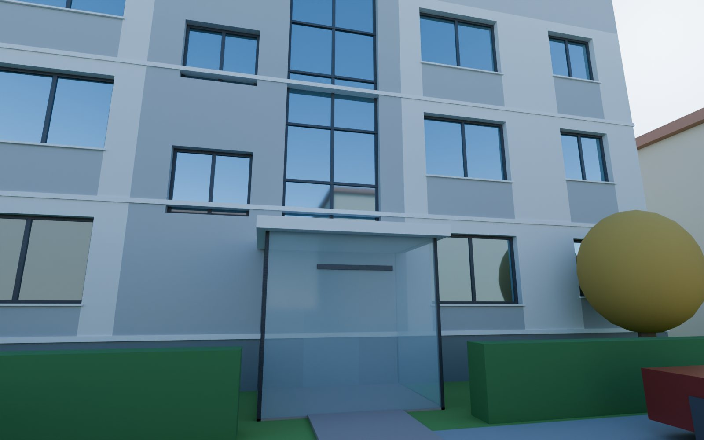
L'ingresso vetrato a quota marciapiede
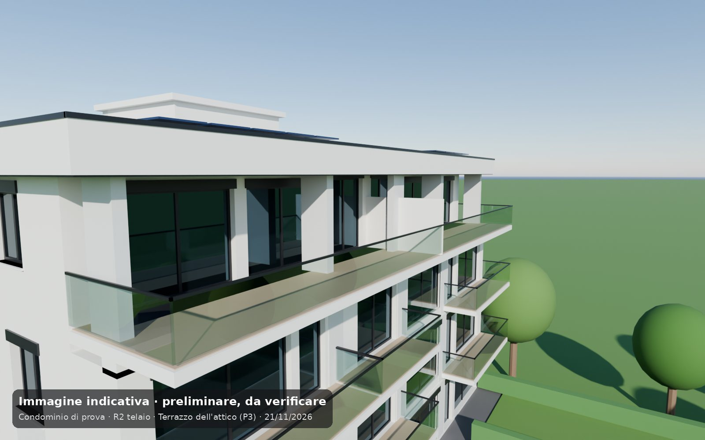
Il terrazzo dell'attico sotto il loggiatoFronte sudDall'alto: copertura piana con cornicione, fotovoltaico, lotto
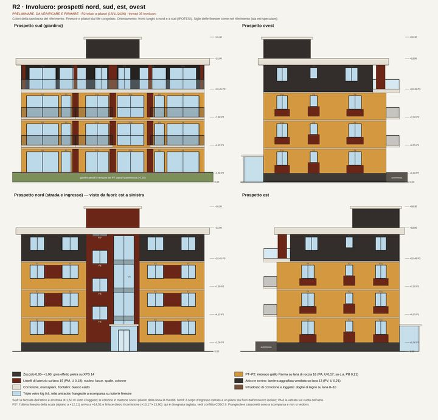
I quattro prospetti con aperture e schermature (colori superati: ora bianco e grigio)
Immagini indicative ricavate dal modello Blender costruito con la geometria unica del progetto. Colori, verde e auto sono ipotesi; il portone dell'atrio è disegnato aperto.
Esplora
Entra nell'edificio.
Il modello è generato dagli stessi dati del progetto: ruotalo, aprilo piano per piano, tocca una stanza per leggerne i dati, entra in un alloggio e cammina. Accendi il telaio per vedere pilastri e travi, o gli impianti per vedere dove passano i tubi.
Piano
Entra
Impianti
Vista
Trascina per ruotare, pizzica o usa la rotella per ingrandire. Scegli un piano per aprirlo dall'alto senza soffitto; quando entri in un alloggio il soffitto torna. I mobili sono modellati da noi, uno per uno, sugli ingombri delle piante; forme e colori sono ipotesi.
Gli alloggi
Tre tagli, disegnati fino alle porte.
Ogni pianta ha porte con il verso di apertura, finestre, sanitari e arredo fisso. Una sedia a ruote simulata ha percorso ogni alloggio: dove non passava, il progetto è stato corretto.
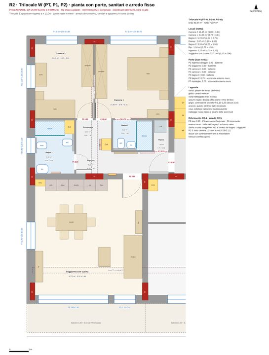
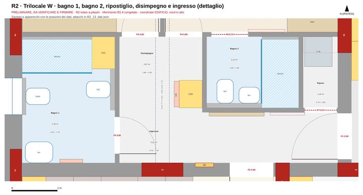
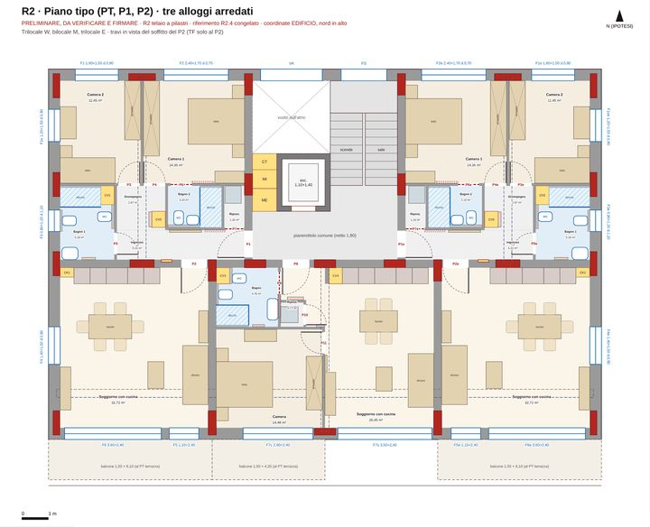
Trilocale
Piani terra, primo e secondo · ali ovest ed est, speculari
75,9 m² utili · 94,0 lordi
Soggiorno con cucina a sud sul balcone. Camera matrimoniale con il suo bagno, camera d'angolo con due finestre, bagno con finestra raggiunto dal disimpegno.
Locale
m²
Soggiorno con cucina
32,72
Camera matrimoniale con bagno
14,36
Camera d'angolo, due finestre
11,45
Bagno 1 con finestra, bidet e doccia
5,19
Bagno 2 nella camera
3,10
Ingresso e disimpegno
7,89
Ripostiglio con lavatrice
1,16
Balcone 1,50 × 6,10
9,2
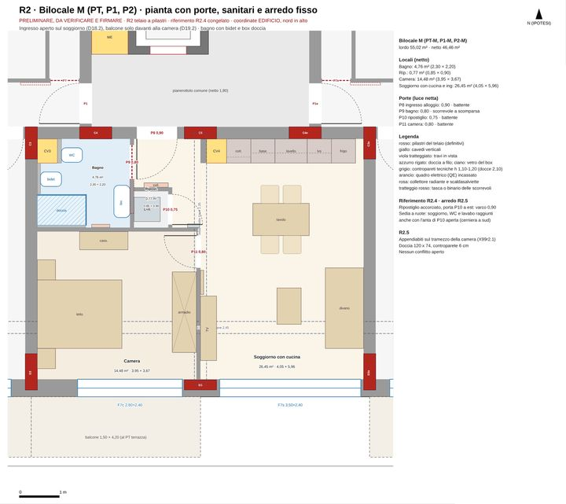
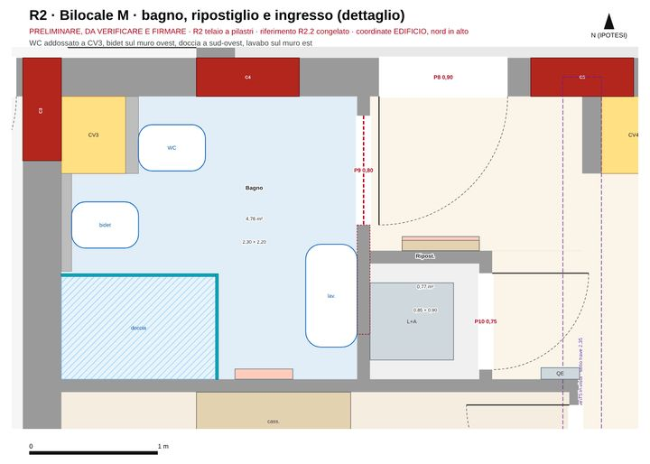
Bilocale
Piani terra, primo e secondo · al centro, affaccio a sud
46,5 m² utili · 55,0 lordi
Ingresso aperto sul soggiorno, camera matrimoniale con il balcone, bagno con bidet e doccia a filo pavimento.
Locale
m²
Soggiorno con cucina e ingresso
26,45
Camera
14,48
Bagno con bidet e doccia
4,76
Ripostiglio con lavatrice
0,77
Balcone davanti alla camera
6,3
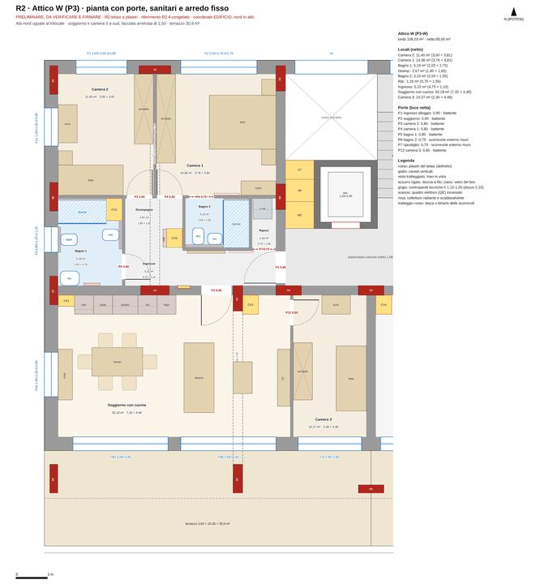
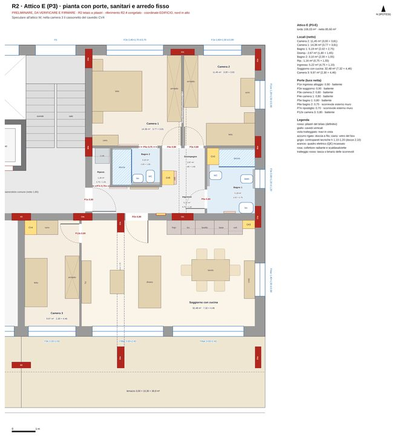
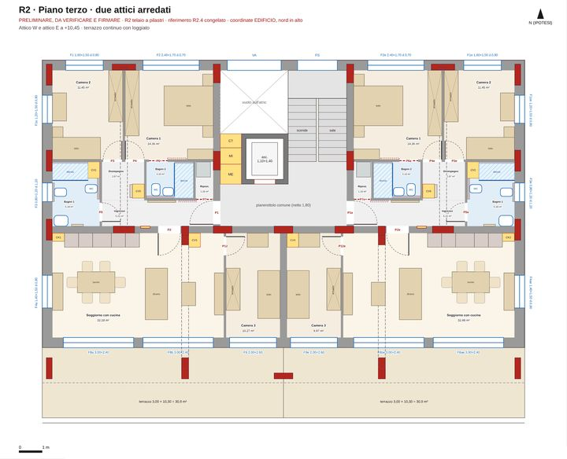
Attico
Piano terzo · due alloggi che si dividono il piano
85,6 m² utili · 106,0 lordi
La zona notte del trilocale più una terza camera, e un soggiorno largo più di sette metri che si apre sul terrazzo di 30,9 m² sotto il loggiato.
Locale
m²
Soggiorno con cucina
32,18
Camera matrimoniale con bagno
14,36
Camera d'angolo
11,45
Camera 3
10,27
Due bagni
8,29
Ingresso, disimpegno, ripostiglio
9,05
Terrazzo con loggiato
30,9
Dentro gli alloggi
Le stanze arredate, con la luce vera delle finestre.
Ogni mobile è stato modellato da noi, senza librerie scaricate, e messo dove lo prevedono le piante: letti, divani, cucine, sanitari. Muri, porte, finestre, travi e pilastri vengono dalla stessa geometria del progetto.
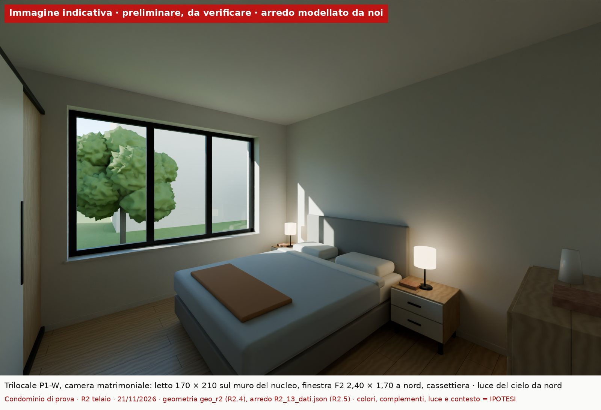
Trilocale: camera matrimoniale
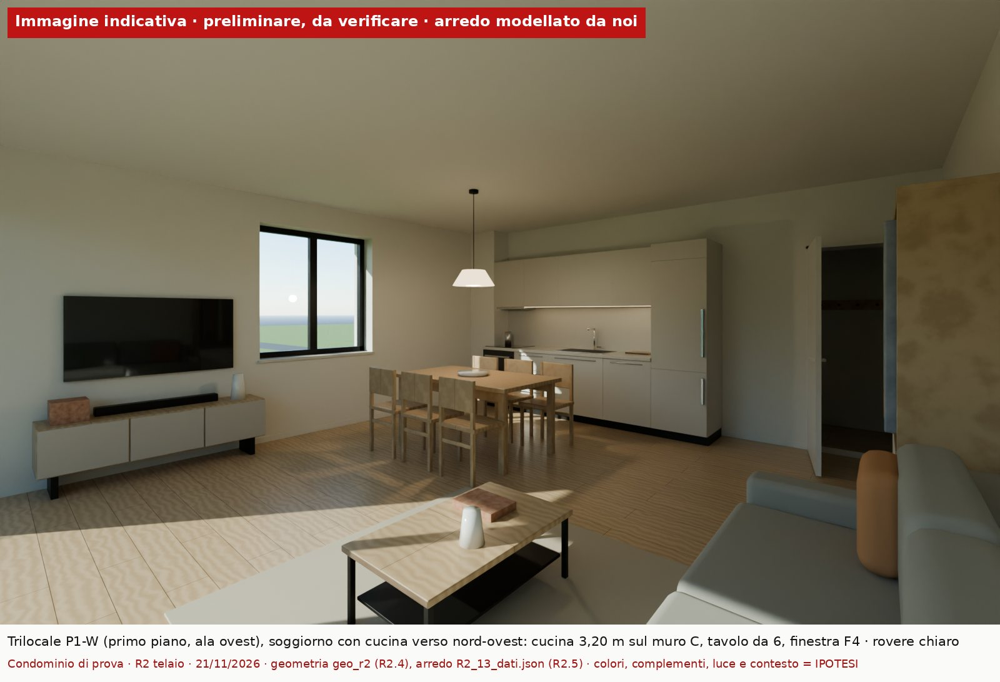
Trilocale: soggiorno con cucina
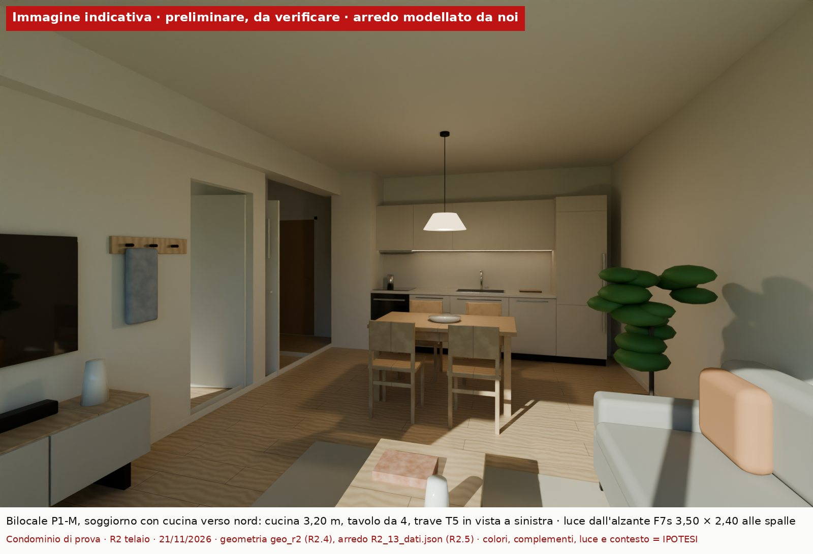
Bilocale: soggiorno con cucina e ingresso
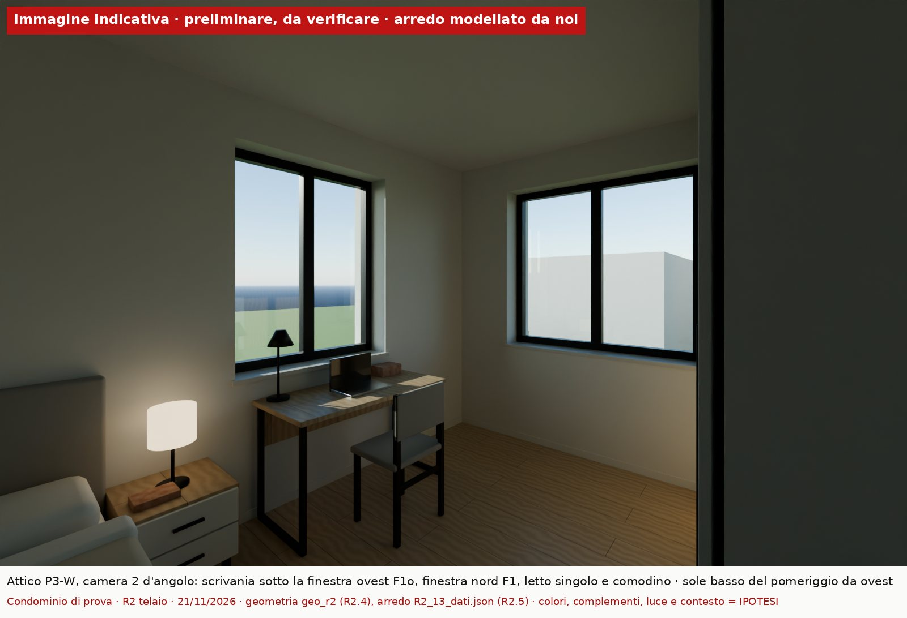
Attico: camera d'angolo con due finestre
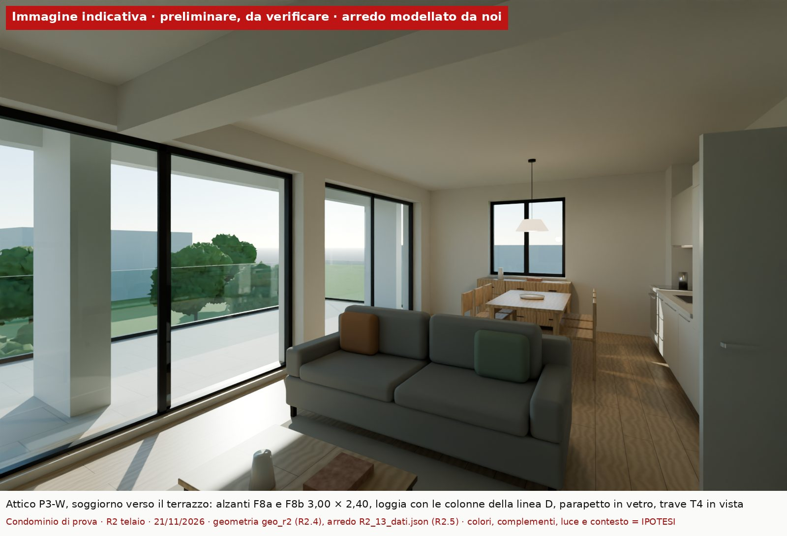
Attico: soggiorno verso il terrazzo con loggiato
Immagini indicative, preliminari, da verificare. Materiali, colori e complementi d'arredo sono ipotesi.
La struttura
Un telaio calcolato a elementi finiti.
Il telaio in calcestruzzo armato non è stato dimensionato a occhio: è stato costruito un modello tridimensionale a elementi finiti con OpenSees, un programma di calcolo strutturale aperto usato nella ricerca. 124 nodi, 232 elementi fra pilastri e travi, solai come diaframmi rigidi, analisi modale e analisi con spettro di risposta secondo le norme tecniche del 2018.
0,66 speriodo del primo modo di vibrare (direzione est-ovest); il secondo è 0,62 s, il terzo, di torsione, 0,61 s.
2.219 kNtaglio alla base con il sottosuolo più prudente (categoria D); 1.255 kN con la categoria C.
15,7 mmspostamento massimo fra due piani nel terremoto frequente, contro 15,8 ammessi: passa senza margine con il sottosuolo D (9,3 mm con il C).
124 tdi acciaio stimate in tutta la struttura, cioè 105 kg per metro cubo di calcestruzzo (± 20%).
1.187 m³di calcestruzzo fra platea, muri dell'interrato, pilastri, travi, solai e scale.
2 metodiogni risultato del modello è stato confrontato con un calcolo a mano indipendente: la tabella è qui sotto.
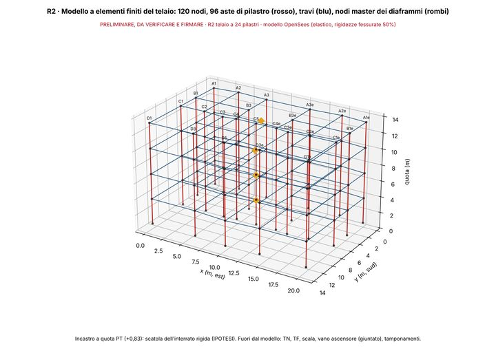
Il modello: nodi, pilastri, travi e diaframmi di piano
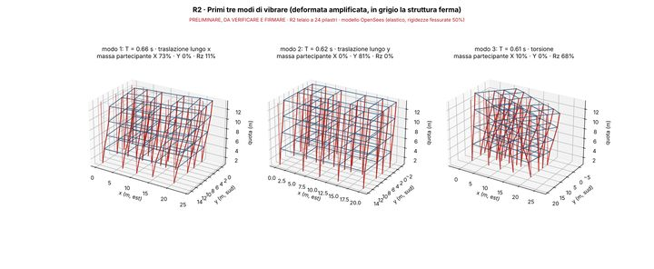
I primi modi di vibrare
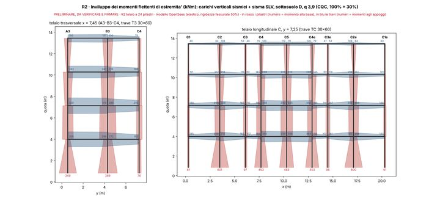
Sollecitazioni negli elementi con lo spettro di progetto
Calcolo a mano e modello a confronto
Grandezza
A mano
OpenSees
T1 direzione x (s)
0,71
0,66
T1 direzione y (s)
0,72
0,62
V base x, sottosuolo D (kN)
2.192
2.219
V base y, sottosuolo D (kN)
2.140
2.263
V base x, sottosuolo C (kN)
1.215
1.255
V base y, sottosuolo C (kN)
1.186
1.350
interpiano SLD x, D, baricentro (mm)
11,99
12,39
interpiano SLD y, D, baricentro (mm)
13,63
11,40
interpiano SLD x, C, baricentro (mm)
6,76
7,02
interpiano SLD y, C, baricentro (mm)
7,69
6,83
Dove va l'acciaio
Parte
Calcestruzzo m³
Acciaio t
Pilastri
95
16,7
Travi
114
22,4
Solai in laterocemento con fasce piene, pianerottoli e cornicione
152
18,5
Sbalzi: balconi p1-p2 e terrazzo p3
16
1,4
Scala
11
1,2
Vano ascensore
34
3,0
Muri dell'interrato, della rampa e pilastri dell'autorimessa
149
12,7
Copertura dell'autorimessa e della rampa
160
16,8
Platea 60 cm con ringrossi e fossa
455
31,2
I punti deboli, dichiarati
La torsione è al limite: il terzo modo è vicino ai primi due. Con il sottosuolo più prudente lo spostamento fra i piani passa senza margine: serve l'indagine sul terreno vero. Nello scenario di terreno peggiore la platea da sola non basta. In cantiere, con la falda alta, l'interrato vuoto galleggerebbe: va tenuta bassa l'acqua finché il peso non c'è.
I ferri degli elementi tipo
Dalle sollecitazioni del modello sono state disegnate le armature di cinque elementi tipo: ogni barra del rendering ha diametro, lunghezza e posizione scritti nei dati.
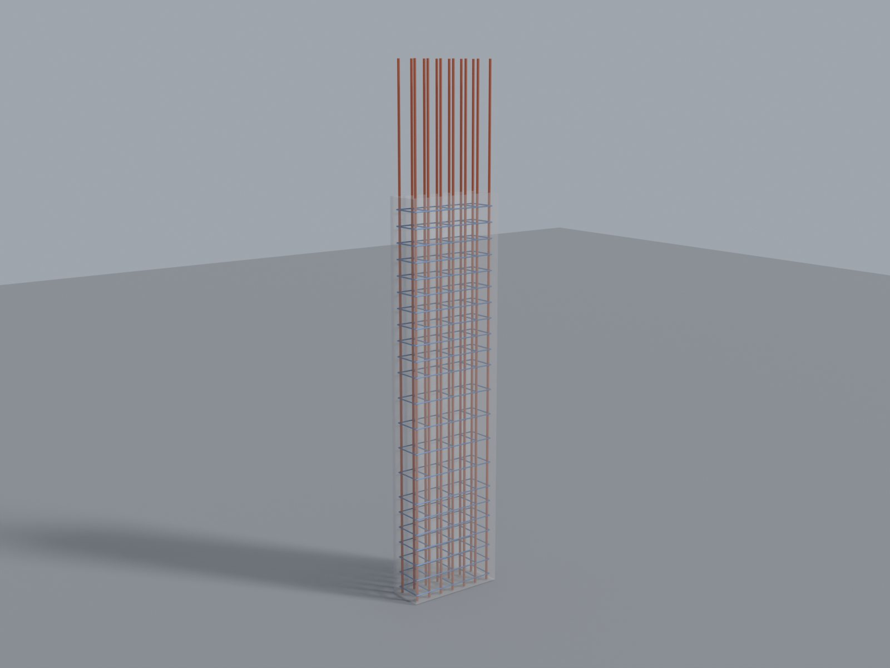
Pilastro tipo: barre verticali e staffe fitte ai nodi
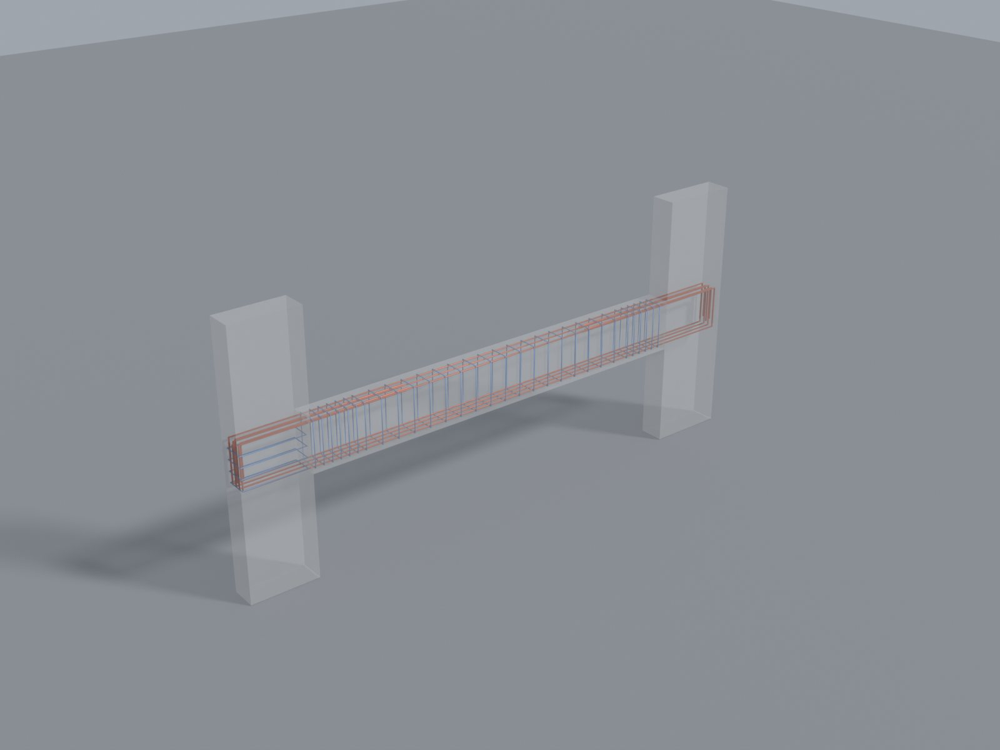
Trave tipo con il nodo sul pilastro
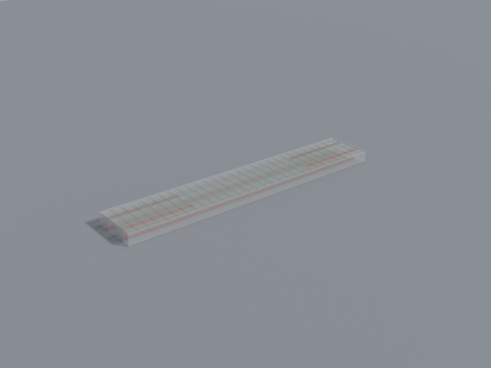
Solaio in laterocemento
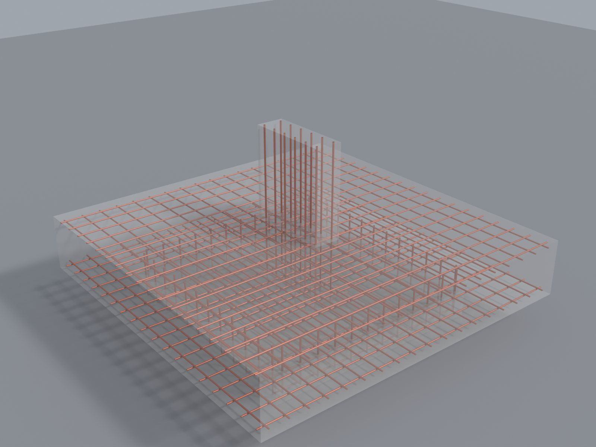
Platea con ringrosso sotto il pilastro
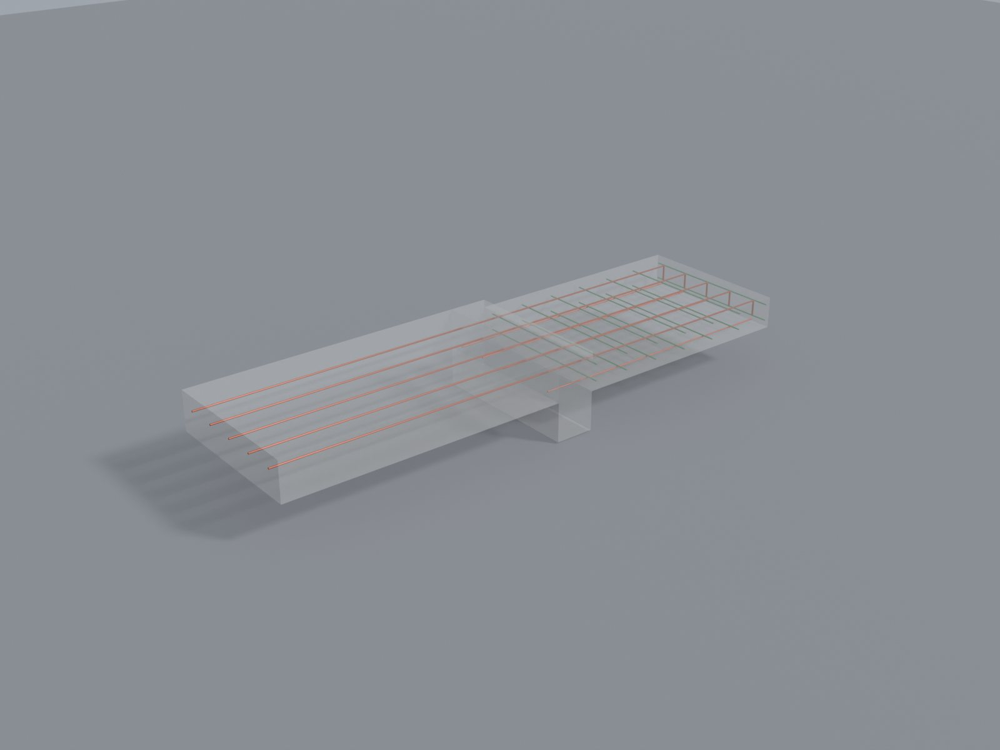
Sbalzo del balcone
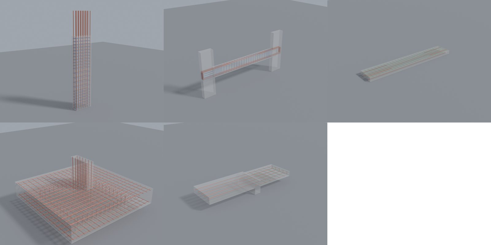
Riepilogo dell'acciaio per famiglia
Predimensionamento non certificato. Il modello è elastico, con rigidezze ridotte e incastro alla quota del piano terra; le regole di dettaglio delle armature sono state applicate senza rileggere il testo della norma. Serve a capire se la struttura sta in piedi e quanto pesa, non a costruirla: il progetto strutturale vero va fatto, verificato e firmato da un ingegnere abilitato.
Gli impianti
Tubi e cavi passano dove il telaio lo permette.
Colonne nei cavedi, nessun foro nelle travi e nei pilastri, sanitari nelle posizioni decise dalle piante. Ogni tratto è un oggetto con coordinate, quota e diametro: il controllo automatico lo confronta con pilastri, travi, solai, arredo e con gli altri impianti.
Le norme
Che cosa è stato preso in considerazione.
Le norme che compaiono nelle relazioni del progetto, per tema. Alcune sono entrate in un calcolo eseguito con codice, altre hanno dato una misura o una soglia, altre sono solo citate. Molte sono state lette da fonti secondarie: vanno tutte rilette da un professionista.
applicata con un calcolousata come criteriosolo citata
La quantità
Tutto il progetto, cartella per cartella.
Una disciplina per volta. Ogni cartella contiene la relazione, il codice dei calcoli con i risultati, i dati e i disegni di questa revisione. La versione precedente, a pareti portanti, resta in archivio.
I disegni
Il metodo
Una geometria sola, congelata. E gli errori si scrivono.
Il progetto è una prova per capire fin dove arriva un'intelligenza artificiale. Tutte le discipline leggono lo stesso file di geometria, congelato con un'impronta: chi trova un problema non sposta un muro per conto suo, lo segnala, e il coordinamento decide e ricongela. Poi un controllo automatico cerca gli urti fra tutti gli oggetti.
NORMA
Riferimento letto e verificato, oppure dichiarato «da rileggere».
CALCOLO
Eseguito con codice e ricontrollato con un secondo metodo.
STIMA
Ordine di grandezza dichiarato come tale.
IPOTESI
Dato mancante assunto in modo prudente e annotato nel registro.
Cose che i controlli hanno trovato in questa revisione
E02r2.2 · architettura
Di nuovo una camera senza porta
La prima disposizione lasciava la camera d'angolo senza accesso dal disimpegno, lo stesso errore della versione precedente. Corretta scambiando le due camere.
D04r2 · strutture
Pilastri troppo piccoli
Le sezioni proposte dall'architettura non bastavano: il modello a elementi finiti le ha fatte crescere, e due passaggi dell'interrato si sono stretti di conseguenza.
C05r2.1 · involucro
Tre stanze con poca luce
Il calcolo della luce diurna dava meno del 2% in camera matrimoniale, nella camera 3 degli attici e nel soggiorno del bilocale: finestre allargate e geometria ricongelata.
C13r2.1 · piante
La sedia a ruote non passava
Un varco di 60 cm nel bilocale, una porta stretta verso il soggiorno, una porta del bagno che chiudeva il WC. Tre correzioni a tramezzi e porte, senza toccare un pilastro.
C05r2.9 · involucro
Una finestra dietro il cornicione
L'ultima finestra della scala finiva dietro il cornicione e dentro una trave. È diventata una finestra bassa.
99 · coordinamento
Conflitti decisi, non nascosti
conflitti segnalati dalle discipline, tutti decisi e scritti nel registro; il controllo automatico su oggetti non trova urti.